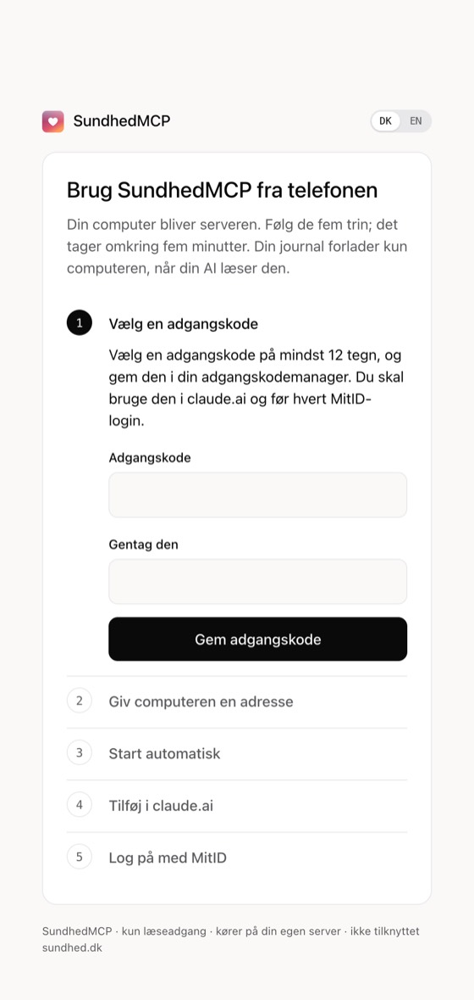
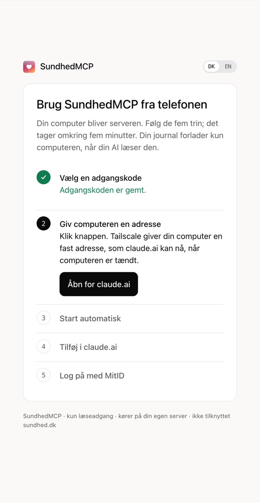
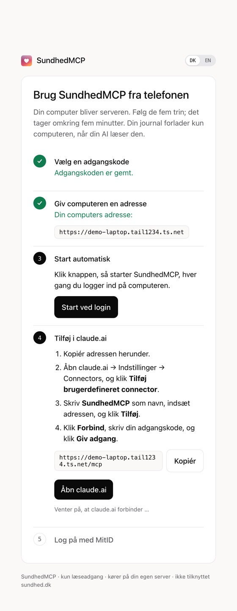

SundhedMCP
SundhedMCP
Brug SundhedMCP fra telefonen
Din egen computer bliver serveren. Følg de fire trin, så kan Claude på telefonen læse din journal, når computeren er tændt.
- 1
- 2
Start SundhedMCP
Åbn Terminal (Mac: tryk ⌘ + mellemrum, og skriv Terminal). Indsæt kommandoen, og tryk Enter. Guiden åbner i din browser.
npx -y sundhedmcp serveBruger du allerede SundhedMCP i Claude Desktop eller Claude Code? Skriv i stedet:
Sæt SundhedMCP op til min telefon - 3
Følg guiden på computeren
Guiden tager dig gennem fem trin og krydser dem af, efterhånden som du når dem. Log på med MitID på computeren, ikke på telefonen: MitID viser en QR-kode, som du scanner med MitID-appen.

Vælg en adgangskodeDu skal bruge den i claude.ai. 
Klik “Åbn for claude.ai”Tailscale giver computeren sin adresse. 
Tilføj i claude.aiKopiér adressen, og klik Start ved login. - 4
Spørg fra telefonen
Åbn Claude-appen, og spørg fx: “Hvornår fik jeg sidst min stivkrampevaccination?” Connectoren fra claude.ai er allerede på telefonen.
Er computeren slukket, svarer SundhedMCP ikke. Tænd den, så virker det igen.

SundhedMCP kører intet på en server af sin egen. Kopien af journalen ligger i ~/.sundhedmcp på din computer.
Det, Claude læser fra journalen, sendes til Anthropic. Spørg kun om det, du vil dele.
Adressen er offentlig, men connectoren kræver din adgangskode, og guiden svarer kun på din egen computer.
SundhedMCP henter og viser. Det tolker ikke svar. Spørg din læge om medicin.